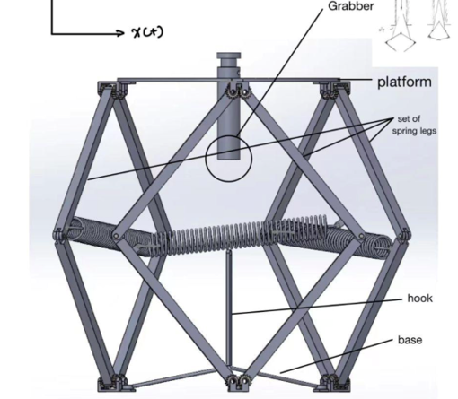
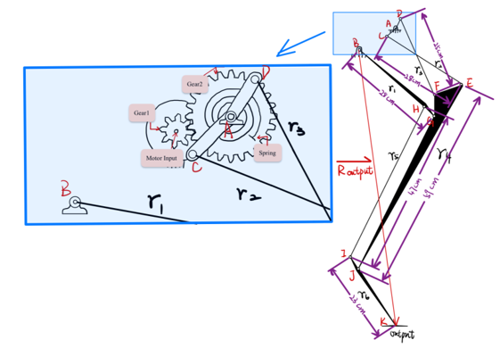

← Back to Projects
Jumping Robot — Spring Mechanism & MATLAB Kinematics
2021 · Personal / Coursework
SolidWorks
Mechanical Design
Springs & Dampers
Kinematics
MATLAB
Trajectory Analysis
Gallery



Overview
- Concept robot that stores energy in a spring pack and releases it for a vertical jump.
- Focus on simple, serviceable mechanics: modular legs, central spring, and a compact frame.
- Goal: fast setup, repeatable launches, and safe landing with passive damping.
Mechanical Design
- Rough CAD of frame and leg set; central torsion/compression spring with adjustable preload.
- Basic latch and hook interface for energy charge → release sequence.
- Material concept: 6061-T6 bars and printed PA12 guides for light weight.
- Exploded views and simple drawings used to estimate mass and clearances.
MATLAB Kinematics
- Hand-derived linkage equations to track leg angle and tip path over time.
- Computed trajectory envelopes for loading vs. release phases.
- Energy model: spring → kinetic → potential; losses lumped as damping.
- Used results to size spring rate and set a target 2 m jump (ideal, no wind).
Results & Next Steps
- CAD proves basic packaging; MATLAB shows feasible takeoff velocity.
- Next: add bumper pads and a simple dashpot for landing control.
- Plan a bench test for spring rate & preload vs. travel; validate trajectory with high-fps video.
- Optional: integrate a servo latch and encoder for controlled release timing.